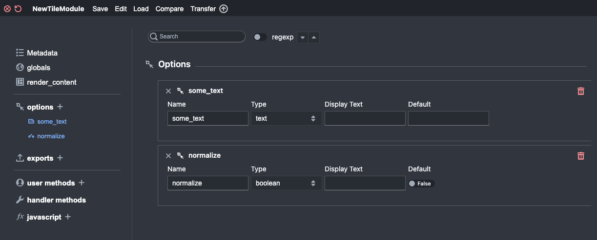

The Tile Creator¶
Welcome to the future of tile creation. The Tile Creator is the editor that provides a scaffolded environment for creating and editing tiles.
Creating the new tile¶
To get started, go to the library and click .
When prompted give your tile some sort of useful name. Then you should see something that looks like this:

The left-side of the interface provides a list. You select items from the list to show and hide them from the editing pane on the right. (Some parts of the list are inside collapsible sections.
In the figure above, the render_content method is selected and can be edited. In short, what
you need to understand is that this bit of python code must return the
html that will be displayed in your tile. Thus, the last line in the box
should be a return statement.
So, for example, if you change the content of the box to be:
new_html = "hello world"
return new_html
Then you will have a tile that simply prints “hello world” on its face.
Remember that the text you display can be any valid html and will be displayed as such. So, for example, if you instead write this:
new_html = "<b>hello world</b>"
return new_html
Then you’ll instead have a tile that display “hello world” in bold text.
For its styling, Tactic uses the awesome blueprint project. That means you can use blueprint’s special CSS styles in the html that your tiles produce. For example, if there is a button on the front of your tile, giving that button the class “bp4-button” will cause the button to be styled in the manner of blueprint.
In writing your tile, you have access to a number of tactic-specific commands that, for example, give you access to your data. These are described in some detail in The Tile API and Object-Oriented API.
You can also import and make use of a number of Scientific Libraries. That list is not always kept up to date though. Go to the relevant web sites for documentation on these libraries.
You can use these Keyboard Shortcuts within the box containing your code.
metadata¶
The Metadata pane is where you specify a bit of metadata for your tile. The “Category” field determines the menu under which your tile will appear in the main project environment.
options¶
The options pane is where you specify Tile Options that will appear when you click the gear icon on your tile. Click on options to expand that section of the list. You can click the “+” button to add a new option. Then click the new option on the list to display its pane and edit it.
Here I have created two options, a text option some_user_text and a boolean option normalize that has a default value
of True. You use the form at the bottom to create new options. To modify an existing options, first click
on the row in the table of options. Then edit the option in the form at the bottom and click update.


These option can now be referred to in the tile code as
self.some_user_text. So if you then change your code to be:
new_html = "<b>" + self.some_user_text + "</b>"
return new_html
There are a couple of things you can do to make the list of options less overwhelming for readers. One thing you can do is simply to order your options in a sensible way. You can do this by clicking and dragging them in the list of option. You can also insert divider options. These can be used to visually group your options into named categories on your tile.
There are many different types of options as described here: Tile Options <options>. there’s an extra step required in
making use of some of these options (e.g., list_select, pipe_select,
function_select, class_select). In these options, the variable
you get contains only the name of the selected resource. To extract the
value you have to use The Tile API or the Object-Oriented API.
widgets¶
You can similarly add widgets to your tile that will be created when the tile is loaded. The mechanics are similar to adding options and exports. You can read more about this here.
Divider widgets can be used to visually group your widgets in the list of widgets. If you don’t want the divider to be visible in the tile, you can set “render” to False.
exports¶
You can also specify the name of parameters that will be exports for
your tile. (Exported parameters are available as pipes within other tiles.
Note that these must be instance variables assigned values in your code
in this manner self.variable_name = .... )
The interface for this is pretty much the same as for the options pane.
user methods¶
You can click on user methods to create and display additional methods.
This is for advanced users. But if you use the tile creator to
look at existing tiles they will often have methods that are visible
here. You can define new methods that will be accessible in your tile.
For example, you could define a method my_method like so:
def my_method(self, avar):
return myvar + 2
All methods that you define need to have self as the first argument.
If you define a method here with “divider” in its name, this will create a divider within the list of user methods.
This is a way to visually group your methods. For the tile to save propertly, you’ll need to give the function a body
that is valid python code. For example, you could use pass as the body of the function.
handler methods¶
Handler Methods are methods that have special meaning in tactic. Creating one is a two-step process: (1) Select the handler method from the list. (2) Click the plus symbolon the right..
globals¶
The globals tab provides a place where you can enter code to be in the global namespace when the tile class is created. There is a little more about this here.
javascript¶
You can also add javascript code to your tile. More on this is in Javascript widgets.
using the omnibar with the tile creator¶
When the tile creator is visible, you can use the omnibar to search of anything that appears in the navigator pane on the left.